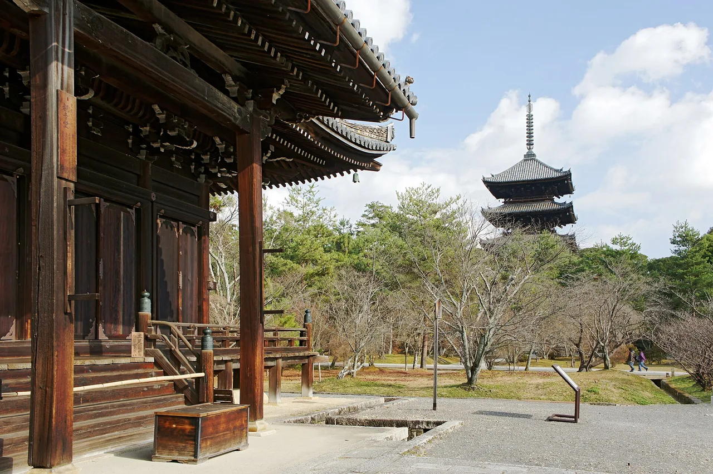

Kirie goshuin: Japan's paper-cut temple stamps
A normal goshuin (御朱印) is ink and vermilion brushed into your stamp book while you wait. A kirie goshuin (切り絵御朱印) is something else: a sheet of paper cut clean through into a lattice of maple leaves, dragons or temple roofs, so the colour behind it shows through the holes. It is the fastest-growing corner of Japan's stamp-collecting hobby, it is almost always handed over as a loose sheet rather than written into your book, and the good designs sell out. This guide covers what these are, which temples and shrines have them confirmed on their own websites, what they actually cost, and the rules that catch visitors out.

What a kirie goshuin actually is
Kirie (切り絵) is paper-cutting — an image made by removing paper rather than adding ink. A kirie goshuin applies that to the temple stamp: the shrine or temple's name and seals sit on a sheet whose surrounding design has been cut out entirely, usually backed by a second sheet of gold, colour or plain white so the pattern reads. Hold it against a window and the light comes through the cuts.
Two production methods sit under the same name, and they are worth telling apart. Most of the boom is laser-cut: a design is drawn, cut in volume, and issued as a numbered seasonal run. A smaller tradition is hand-cut. At Fumon-ji (普門寺) in Toyohashi, Aichi, the temple states on its own site that the seal papers were all cut by hand by the previous head priest and the characters written one sheet at a time, modelled on the hōrai good-luck cuttings displayed at Kōyasan, and that it has been issuing them since 2016.
The practical consequence of both methods is the same. A cut sheet cannot be brushed on the spot, so a kirie goshuin is nearly always kakioki (書き置き) — pre-made, handed to you loose, and taken home to be mounted. You do not hand over your stamp book for it.
These are limited runs, not stock items. Temples state plainly that they do not hold, reserve or reissue them: Hōtoku-ji's own goshuin page says it does not take reservations or set anything aside, does not answer goshuin enquiries by phone or email, and does not issue a limited design outside its period. If the design you came for is gone, it is gone.
Where the boom came from
There is no neutral registry of who cut the first one. The claim that exists in writing is a self-description: Ryūsen-ji in Kumagaya, Saitama — better known as Saitama Yakuyoke Kaiun Daishi — calls itself on its own website "the temple where kirie goshuin originated" (切り絵御朱印発祥の寺). Treat that as the temple's own account rather than an established fact, because no independent body certifies it. What is not in dispute is that the format spread quickly after around 2020 and now reaches from Aomori to Fukuoka.
The most interesting case is not a single temple but a town. In Yokoze, a small town in the Chichibu district of Saitama, the tourism association coordinated a joint kirie goshuin across eight temples on the Chichibu pilgrimage route plus a shrine — nine sites, each with its own design, in one walkable town. That turns a single souvenir into a local circuit, which is exactly the mechanism behind Japan's other collecting games such as manhole cards and roadside-station stamps.
Where to get one: confirmed temples & shrines
Every entry below was checked against the temple's or shrine's own website, or its town's official tourism site. Prices are listed only where the site states them — many temples deliberately do not publish a figure, because the payment is framed as an offering rather than a purchase.
| Where | Place | What's offered | Stated price | By post? |
|---|---|---|---|---|
| Ryūsen-ji龍泉寺・埼玉厄除け開運大師 | Kumagaya, Saitama | Seasonal kirie changing every three months, plus layered and direct-written versions. Open Mon and Wed–Sun, 9:30–16:00 (closed Tue) | not published | Yes |
| Hōtoku-ji宝徳寺 | Kiryū, Gunma | Monthly-changing Jizō-and-seasonal-flower designs, plus year-round Fūjin Raijin, Idaten and Ususama Myōō on gold backing | not published | Yes — max 3 sheets per person |
| Takahata Fudōson Kongō-ji高幡不動尊金剛寺 | Hino, Tokyo | Seasonal kirie in limited numbers; the temple explicitly asks that they not be resold | ¥1,000 | not stated |
| Ninna-ji仁和寺 | Kyoto (UNESCO site) | Summer "cooling at Ninna-ji" design at the palace-garden office 9:00–17:00; a Reiwa-8 Amida Nyorai design at the Kondō office 9:00–16:30 | ¥1,500 each | not stated |
| Tanashi Jinja田無神社 | Nishi-Tokyo, Tokyo | Five-dragon design by local paper-cut artist Ode Shū, in monochrome and colour versions | ¥1,500 | not stated |
| Yokoze town circuit横瀬町の9寺社 | Chichibu district, Saitama | Nine sites, one design each — Chōkō-ji, Bokuun-ji, Hōchō-ji, Saizen-ji, Myōchi-ji, Daiji-ji, Tōrin-ji, Daichūin and Fuji Sengen Jinja. Year-round. 8:00–17:00 (Mar–Oct), closed 12:00–12:30 | ¥1,000–1,500 | No |
| Rinnō-ji日光山輪王寺 | Nikkō, Tochigi (UNESCO site) | Daigomadō kirie goshuin, currently a carp-and-hall design; seasonal versions rotate | ¥1,500 | not stated |
| Fumon-ji普門寺 | Toyohashi, Aichi | Hand-cut, not laser-cut. Issued since 2016, modelled on Kōyasan hōrai cuttings; the fee funds restoration of the temple's Important Cultural Property statues | offering, not published | Yes |
Two of these are easy to fold into a trip you were taking anyway. Ninna-ji is a World Heritage temple in north-west Kyoto that most first-time visitors already have on the list. Rinnō-ji is inside the Nikkō shrine complex, a standard day trip from Tokyo — and Nikkō's highlands turn red in mid-October, weeks before Kyoto.
The five rules that catch visitors out
1. You will not get it written in your book. A cut sheet is handed over finished. Bring something to carry it flat; some temples sell a dedicated holder. This is the single biggest expectation gap for visitors who have only collected ordinary goshuin.
2. Visit first, collect after. The stamp is evidence of a visit. Jinja Honchō, the national association of Shinto shrines, describes the goshuin as something received as proof of having worshipped, with the practice descended from a receipt for copied sutras handed in at a temple. Go to the hall, pay respects, then go to the counter.
3. Counters close well before the grounds do. Reception windows in the table above run to 16:00 or 17:00 even where the site itself stays open later. Hōtoku-ji states goshuin reception as 9:00 to 16:00. Plan the stamp before the sightseeing, not after.
4. Limits and no-resale requests are real. Hōtoku-ji caps postal orders at three sheets per person. Takahata Fudōson asks buyers not to resell. These are stated on the temples' own pages because resale onto auction sites became a problem.
5. Postal availability is genuinely split. Ryūsen-ji, Hōtoku-ji and Fumon-ji offer postal issue. Yokoze's nine sites state flatly that they do not. Do not assume a temple will post one because another did.
Start with the basics — what goshuin are and the etiquette → — then how to choose a goshuinchō stamp book →. Castles have their own paid version, the gojōin →.
What they cost, and what to keep them in
Where a price is published, the range is tight: ¥1,000 at Takahata Fudōson, ¥1,000–1,500 across the Yokoze circuit, ¥1,500 at Ninna-ji, Tanashi Jinja and Rinnō-ji. That is roughly two to three times an ordinary goshuin, which commonly runs ¥300–500. For comparison, Kōjaku-ji at Kōrankei publishes ¥500 for its standard designs and ¥1,000 for large-format ones — a useful anchor for what "normal" costs.
Storage is the part people get wrong. A cut sheet is fragile at the thin bridges of the design, and gluing it into an accordion book crushes the relief and hides the backing colour. The common solutions are a clear-pocket album made for loose goshuin, or a dedicated holder — Rinnō-ji has issued a seasonal kirie that came with its own holder included in the price. Buy the album before you start collecting, not after the first sheet creases in a rucksack.
The Japanese you'll actually use
The counter exchange is short, but these are the words on the signs.
| Japanese | Reading | Meaning |
|---|---|---|
| 切り絵御朱印 | kirie goshuin | paper-cut goshuin |
| 書き置き | kakioki | pre-written sheet — how kirie is almost always issued |
| 直書き | jikagaki | written directly into your book (not used for kirie) |
| 限定 | gentei | limited — of a period, a season or a number of sheets |
| 初穂料 / 納経料 | hatsuhoryō / nōkyōryō | the offering — shrine and temple wording respectively |
| 授与所 / 納経所 | juyosho / nōkyōsho | the counter where you receive it |
| 郵送 | yūsō | postal issue |
| なくなり次第終了 | nakunari shidai shūryō | "ends when they run out" |
| お一人様〇枚まで | ohitorisama ~mai made | "up to N sheets per person" |
Want these to stick? The free JLPT battle quiz drills travel and culture vocabulary like this with spaced repetition.
Cut-paper stamps chain naturally with Japan's other place-bound collecting games: manhole cards →, railway station stamps →, the wider public-infrastructure card genre →, and autumn's limited seasonal goshuin →. In January the collecting moves to a single sheet — the Seven Lucky Gods routes →.
Common questions
Q. What is a kirie goshuin?
A. A goshuin issued on a sheet of paper that has been cut through into a design — maple leaves, dragons, temple architecture — so a coloured backing sheet shows through the openings. Most are laser-cut in limited seasonal runs; a few, such as Fumon-ji in Toyohashi, are cut by hand.
Q. Can it be written into my goshuinchō?
A. Generally no. Because the sheet is cut and pre-made, it is handed over loose (kakioki). Keep it in a clear-pocket album or a dedicated holder rather than gluing it into an accordion book.
Q. How much does one cost?
A. Where temples publish a figure it is usually ¥1,000–1,500 — for example ¥1,000 at Takahata Fudōson in Tokyo and ¥1,500 at Ninna-ji in Kyoto. Many temples publish no price at all, since the payment is treated as an offering.
Q. Where can a first-time visitor realistically get one?
A. Ninna-ji in Kyoto and Rinnō-ji in Nikkō are both World Heritage sites already on most itineraries and both confirm kirie goshuin on their own websites. In Tokyo, Takahata Fudōson in Hino and Tanashi Jinja in Nishi-Tokyo are on ordinary commuter lines.
Q. Can I order one by post from overseas?
A. Some temples post within Japan — Ryūsen-ji, Hōtoku-ji and Fumon-ji all state that they do — but the arrangements are written for domestic addresses and payment, and several places state clearly that they do not post at all. Assume you need to go in person unless the temple's own page says otherwise.
Q. Why do designs sell out so fast?
A. They are cut in fixed runs tied to a month or a season, and temples state that they do not reserve, hold or reissue them. Once a run is exhausted the design is not repeated, which is also why resale became a problem and why temples now ask buyers not to resell.
Q. Which town has the most in one place?
A. Yokoze in Saitama's Chichibu district, where nine temples and shrines each issue their own design year-round, coordinated by the town's tourism association. It is the densest walkable circuit currently documented.
Kirie goshuin appeal to the same taste as hand-split bamboo tools. See our matcha and tea ceremony set comparison → for the chasen, chashaku and bowl sets worth owning — and the one accessory most people forget.